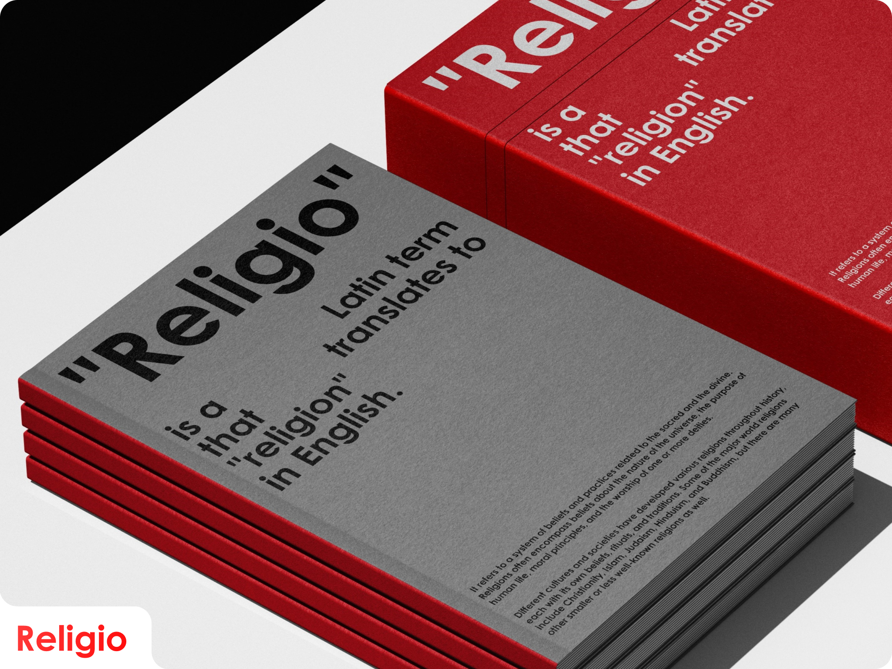

Religio

"A Journey into the Depths of Faith"
"Embark on a transformative journey through the heart of Religio, where faith transcends boundaries and enlightenment awaits. Explore the rich tapestry of beliefs, rituals, and spiritual practices that have shaped civilizations for millennia. Discover the profound connections between diverse faiths, and delve into the universal quest for meaning, purpose, and transcendence. Religio beckons, inviting you to explore the depths of your soul and awaken to the divine within."
"Uncover the hidden truths of humanity's most profound questions: Who are we? Why are we here? What lies beyond the material world? As you navigate the labyrinth of belief systems, you'll find echoes of your own journey mirrored in the experiences of others. Religio is more than a book; it's a sacred quest, a pilgrimage of the soul."
"Embark on a transformative journey through the heart of Religio, where faith transcends boundaries and enlightenment awaits. Explore the rich tapestry of beliefs, rituals, and spiritual practices that have shaped civilizations for millennia. Discover the profound connections between diverse faiths, and delve into the universal quest for meaning, purpose, and transcendence. Religio beckons, inviting you to explore the depths of your soul and awaken to the divine within."
"Uncover the hidden truths of humanity's most profound questions: Who are we? Why are we here? What lies beyond the material world? As you navigate the labyrinth of belief systems, you'll find echoes of your own journey mirrored in the experiences of others. Religio is more than a book; it's a sacred quest, a pilgrimage of the soul."
Embrace the transformative power of faith and embark on a journey that will forever change how you see yourself, others, and the universe.


Religio: Where faith becomes a gateway to the infinite, and every step
leads you closer to the divine. Are you ready to embark on the journey
of a lifetime?


Brand Name:
Category:
Designer:
"Religio"
"Book Design"
"Su Ziyue"
Feel free to explore my work and get in touch if you'd like to collaborate or discuss potential design opportunities. Let's bring your digital ideas to life together!